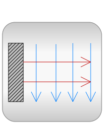

This package contains components to model 1-dimensional heat transfer with lumped elements. This allows especially to model heat transfer in machines provided the parameters of the lumped elements, such as the heat capacity of a part, can be determined by measurements (due to the complex geometries and many materials used in machines, calculating the lumped element parameters from some basic analytic formulas is usually not possible).
Example models how to use this library are given in subpackage
Examples.
For a first simple example, see Examples.TwoMasses where two
masses with different initial temperatures are getting in contact
to each other and arriving after some time at a common
temperature.
Examples.ControlledTemperature shows how to hold a
temperature within desired limits by switching on and off an
electric resistor.
A more realistic example is provided in Examples.Motor where
the heating of an electrical motor is modelled, see the following
screen shot of this example:

The filled and non-filled red squares at the left and right side of a component represent thermal ports (connector HeatPort). Drawing a line between such squares means that they are thermally connected. The variables of a HeatPort connector are the temperature T at the port and the heat flow rate Q_flow flowing into the component (if Q_flow is positive, the heat flows into the element, otherwise it flows out of the element):
Modelica.SIunits.Temperature T "absolute temperature at port in Kelvin"; Modelica.SIunits.HeatFlowRate Q_flow "flow rate at the port in Watt";
Note, that all temperatures of this package, including initial conditions, are given in Kelvin. For convenience, in subpackages HeatTransfer.Celsius, HeatTransfer.Fahrenheit and HeatTransfer.Rankine components are provided such that source and sensor information is available in degree Celsius, degree Fahrenheit, or degree Rankine, respectively. Additionally, in package SIunits.Conversions conversion functions between the units Kelvin and Celsius, Fahrenheit, Rankine are provided. These functions may be used in the following way:
import SI=Modelica.SIunits;
import Modelica.SIunits.Conversions.*;
...
parameter SI.Temperature T = from_degC(25); // convert 25 degree Celsius to Kelvin
There are several other components available, such as AxialConduction (discretized PDE in axial direction), which have been temporarily removed from this library. The reason is that these components reference material properties, such as thermal conductivity, and currently the Modelica design group is discussing a general scheme to describe material properties.
For technical details in the design of this library, see the
following reference:
Michael Tiller (2001): Introduction to Physical Modeling with
Modelica. Kluwer Academic Publishers Boston.
Acknowledgements:
Several helpful remarks from the following persons are
acknowledged: John Batteh, Ford Motors, Dearborn, U.S.A; Anton Haumer, Technical Consulting
& Electrical Engineering, Austria; Ludwig Marvan, VA TECH ELIN
EBG Elektronik GmbH, Wien, Austria; Hans Olsson, Dassault Systèmes
AB, Sweden; Hubertus Tummescheit, Lund Institute of Technology,
Lund, Sweden.
Anton Haumer
Technical Consulting & Electrical Engineering
A-3423 St.Andrae-Woerdern, Austria
email: a.haumer@haumer.at
Copyright © 2001-2013, Modelica Association, Michael Tiller and DLR.
This Modelica package is free software and the use is completely at your own risk; it can be redistributed and/or modified under the terms of the Modelica License 2. For license conditions (including the disclaimer of warranty) see Modelica.UsersGuide.ModelicaLicense2 or visit https://www.modelica.org/licenses/ModelicaLicense2.
| Name | Description |
|---|---|
| Example models to demonstrate the usage of package Modelica.Thermal.HeatTransfer | |
|  Components | Lumped thermal components |
| Thermal sensors | |
| Thermal sources | |
| Components with Celsius input and/or output | |
| Components with Fahrenheit input and/or output | |
| Components with Rankine input and/or output | |
| Connectors and partial models |